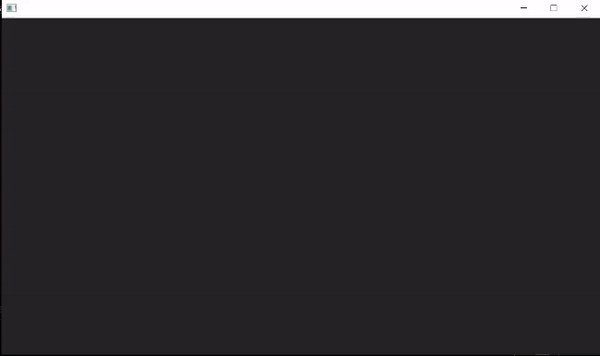
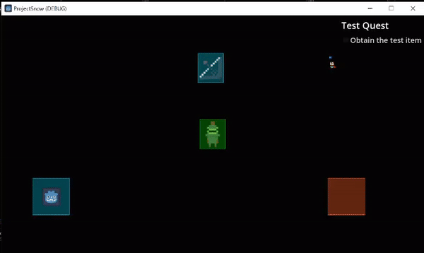

I took a bit of a hiatus last month to spend some time with family, but luckily I return with good news. The quest system and inventoory system seem to be in a working state! Currently, the player can access their inventory by pressing 'I' on their keyboard, but this may be changed in the future depending on feedback I get.
During the game loop, the player will be expected to fulfill a series of quests by getting items and returning them to a specified area. To do this I utilized Godot's Custom Resources to create Items and Quests. The items are stored in a dictionary the player has and the inventory manager reflects that dictionary, showing what the player has and how many of a specific item they have.
Quests, alternatively, have two strings that hold the quest name and title, a boolean that tracks if the quest has been completed, and an array of items that can be used to complete the quest. The quest checker is an Area2D node that calls a method from the game manager to check if the player has any of the items in the array that can complete their current quest. there are multiple ways to tackle a problem, and I didn't want to limit the player too much as to how they could complete a quest.
A more unrelated thing I did was make the game manager a singleton that autoloads, I attempted this earlier in the project but apparently according to the godot gods I did it wrong.
Now that we have the bread and butter of the game figured out hopefully from here It'll be more smooth sailing. Next up will be the dialogue/text system and from there I may be able to start working on a suitable early alpha build.